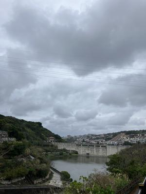
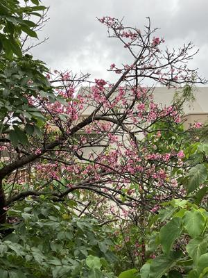
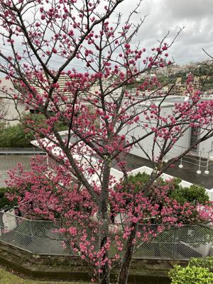

うるがいの話 ある日
最新: 本日は旧正月【うるがいの話 ある日】とは 一日だけのプログです
『うるがいの話』の最新一日だけのプログで、通信料が少なく経済的だ。カニの画像をクリックすると全ての日付が載る『うるがいの話』サイトを表示します
|
|
【うるがいの話】 うるがい(ｳﾙｶﾞｲ urugai)とは、『もずくがに』の名前でとても大きくなります。 |
|---|---|
|
|
【カミマヤーの話】 猫のことを方言でマヤーといいます。カミマヤー（kamimayaa）とは、神の猫のことです。 |
|
【たながぁの音楽】 たながぁ（ﾀﾅｶﾞｰ tanagaa）とは手長えびのことで、何種類かあり大きいのは車 エビぐらいになります。 |

|
【ぶながぁの話】 ぶながぁ(ﾌﾞﾅｶﾞｰ bunagaa)とは、赤い髪の毛、赤い身体、そして身長は１ｍ２０ｃｍ ぐらい、川の蟹を食べているの目撃された。場所は沖縄県国頭郡大宜味村のと ある村僕の隣近所に住んでいる爺さんから、聞いた話です。 |
|
|
【ギーマの話】 ギーマ(giima)とは、山原の里山に咲くスズランに似た、 花を付けます。実は食べられます、 気が付くと口の周りが紫になっています。 |
2024年02月10日 (土）本日は旧正月
14:50

糸満出身でウミンチュ（海人）の亡き父は、この日は漁を休み旧正月の民謡
をみていた。
ティータイム琉球新報 ２０２４年２月７日 より引用
ひと足早いジュウルクニチー（金城健一 大宜味村、７８歳）
さて今年のジュウルクニチーは２月２５日だが、なぜか私のムラ（喜如嘉）
では１月に行う。五十余年前から生活改善運動に合わせ、正月を旧正から新
正に改め、ジュウルクニチも新暦１月１６日に改められた。「この機会に、
子や孫たちが帰れる日曜日にお願いします」との１人の青年の「提案」で決
まったのが、今のジュウルクニチーである。４年前、１９８１年だったと初
老の青年は語っている。
そうそう、確かに大宜味村生れの母親から『生活改善運動』で旧から新の１
月１６日に墓参りをすることになったよと教えてもらったことがある。那覇
市に住んで居る私は、皆と同じく旧暦でやればいいのにと最近思うのだが。
山原へいく機会がほとんどなくなり、望郷の念が徐々に薄れていく。民放で
旧正月の民謡紅白歌合戦は、いつの間にか消えてしまったように、新のジュ
ウルクニチーも廃れていくのだろうか、投稿した先輩（知っている人）には
悪いが。

ロアルド・ダールの『天国への登り道』のオチが分かりません(汗
英語の本を読み終えた、ん？、また意味が分からん。ネットで翻訳を探す。
あった、でも日本語訳でもオチが分からない。さらに、オチが分からんとネ
ットで検索すると、親切な人が教えてくれていた。はぁー、単なる読解力が
ないのか・・・・。うちの桜は、葉桜になっている。一分咲きのまま終わっ
てしまった。小雨の降る中、傘をさしウォーキングする、ついでに今が盛り
の桜を撮る。

ビットコインの総資産が、投資額２万円を超える。うふふふ、３万まで様子
をみるか。

１４時４１分 ビットコインの総資産 ￥２０、４５２（↑４２５）